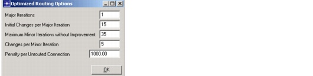

Routing > Route DCL/OCH Traffic Dialog Box > Routing Algorithm
Routing Algorithm
To specify the routing algorithm, choose one of the following options:
- Sequential (per connection)—SP Guru Transport Planner routes an entire connection and all the capacity units requested by that connection completely before it starts with the next connection in the Routing Sequence table.
- Distributed (per capacity unit)—If a connection requests multiple units of capacity, SP Guru Transport Planner tries to set up one capacity unit of each connection (as listed in the Routing Sequence table) before it tries to set up the remaining capacity units of each connection.
The Distributed approach normally results in higher throughput and a better overall allocation of capacity than the Sequential approach.
- Combined—SP Guru Transport Planner tries four combinations of the sequential/distributive options and retains the result that accommodates the most traffic. The combinations are:
- Optimized—SP Guru Transport Planner takes the outcome of the Combined routing strategy, then adds a local optimization step (and possibly additional optimization steps) in an attempt to establish as much traffic as possible in the network. For more information, see Routing Optimization.
- Diverse Routing—This algorithm maximizes the connectivity of the virtual topology that results from routing traffic. SP Guru Transport Planner routes the traffic as unprotected; meanwhile, it tries to route all related connections with the minimal amount of overlap between routes. For more information, see Diverse Routing Algorithm.
Connection Order
You can specify the sequence in which SP Guru Transport Planner passes traffic matrix connections to the routing function. The available options are:
- Longest First (default)—Sorts connections by physical distance and routes the longest connection first. Because SP Guru Transport Planner solves the hardest problems first, this option generally performs well if most or all of the connections can be routed. This option is recommended for total (100 percent routed) or near-total routing solutions.
- Shortest First—Sorts connections by physical distance and routes the shortest connection first. This option improves the output for partial routing solutions if SP Guru Transport Planner cannot accommodate all connections, since the short and easy connections are routed first. Recommended for partial routing with low throughput.
- Biggest First—Routes connections with the highest capacity first. Recommended for accommodating large connections; smaller connections might be rejected in partial routing situations.
- Smallest First—Routes connections with the lowest capacity first. Recommended for accommodating small connections, because it gives smaller connections higher priority to get their share of the capacity.
- Unsorted—Connections are sorted in the order in which they appear in the Traffic Matrix Editor: row1/column2 first, row1/column3 second, etc.
Diverse Routing Algorithm
You can apply the diverse routing algorithm to both DCL- and OCH-layer traffic. This algorithm maximizes the connectivity of the virtual topology that results from routing traffic and ensures that if there is a failure, not all related connections fail simultaneously. There is no absolute requirement for diversity, thus the feature will try to route as much as possible, even if the diversity preference cannot be fully met.
This algorithm works in two phases:
- SP Guru Transport Planner routes the traffic as unprotected; meanwhile, the algorithm tries to route all related connections with the minimal amount of overlap between routes. Therefore, the algorithm sorts the connections and routes them sequentially to ensure a minimal amount of overlap between related connections that were routed in a previous sequence. SP Guru Transport Planner tries to sort the connections based on routing difficulty and route the most difficult connections first.The diverse routing options allow you to define related connections in different ways.
- An optional step tries to optimize the initial solution by rerouting those connections that have a high degree of overlap with their related connections. SP Guru Transport Planner reroutes connections and considers the overlap of related connections. Because of topological constraints, it might not be possible to obtain a completely diverse routing of all related connections. In this case, SP Guru Transport Planner tries to optimize the diversity without guaranteeing it.
This algorithm can consider both node and link diversity. Two settings under Protection Options, described in Protection Options, affect how the connections are routed:
- The layer selected in the Link Disjoint option determines the layer at which the link overlap between related connections is calculated.
- If the Node Disjoint option is selected, SP Guru Transport Planner also tries to route the traffic so that the related connections are as node-disjoint as possible.
Diversity selection:
- Within Traffic Matrices—All connections of all selected traffic matrices will be routed diverse according to the diversity relationship
- Between Traffic Matrices—Connections belonging to different traffic matrices that have a particular diversity relationship will be routed diverse. The connections within one traffic matrix will not be routed diverse however.
Diversity relationship:
- All connections—All connections of the selection will be routed diverse.
- With Same End Nodes—All connections of the selection that have a common end node will be routed diverse. For example a connection between node A and B, will be routed diverse from a connection between node A and C, because they share a common end node.
- Between Node Pairs—All connections of the selection that are routed between the same node pair will be routed diverse. For example, if there are two connections between node A and B, they will be routed diverse.
- Optimize—If selected the diversity will be optimized. This means the algorithm will perform some additional optimization steps to achieve a diversity that is as high as possible between the selected traffic.
The way the options for the algorithm work is that the diversity selection and diversity relationship complement each other, that is, if the option "Within Traffic Matrices" and "Between Node Pairs" is selected, all connections of all traffic matrices between the same node pairs will be routed as diversely as possible. If the option "Between Traffic Matrices" and "Between Node Pairs" is selected connections belonging to different traffic matrices between the same node pairs will be routed as diversely as possible.
Routing Optimization
The Optimized routing approach starts from the best solution of the Combined Routing approach (evaluating different ways of sorting the connections prior to applying the routing algorithm). The optimization process is based on making random changes to this routing solution, followed by an attempt to accommodate the connections not yet routed in the network. A random change selects an established connection at random and then "tears down" that connection. The algorithm contains a number of "major iterations" that make a substantial number of changes to the solution; each major iteration is followed by a local optimization step that contains a number of "minor iterations" to improve the solution. The objective is to maximize the throughput while minimizing the routing cost. The number of changes made and the number of steps taken is specified by following settings and illustrated in the subsequent dialog box.
To configure this algorithm (number of changes made, number of steps taken and so on), click on the Options button in the Routing Strategy area of the Routing dialog box. This opens the Optimization Options dialog box (described in Table 6-2-Routing Options Dialog Box ).
Figure 6-5 Optimization Options Dialog Box

| Home © 1987-2007 OPNET Technologies, Inc. All Rights Reserved. This software may be covered by one or more U.S. Patents. See complete patent notice in the Legal Notices section. OPNET Support Center |